Part A of this project relies on the DeepFloyd IF diffusion model, which is available on Hugging Face. The first stage of DeepFloyd IF takes a text prompt and outputs a 64x64 color image; the second stage upscales the image to 256x256.
We call both stages of the model on three text prompts, as seen below. (I used a random seed of 18,000.) We vary the number of inference steps of each stage of the model; increasing the number of inference steps increases the required computation.
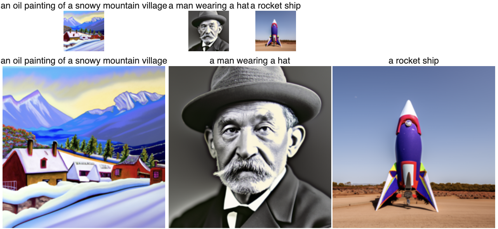Results for num_inference_steps=20.
For num_inference_steps=20 (the recommended value), the first stage generates a reasonable 64x64 image for each of the three prompts, and the second stage does a great job of upscaling. The output images appear slightly more high-contrast than real life; for example, the neon-green portion of the rocket is slightly unrealistic.
Results for num_inference_steps=5.
For num_inference_steps=5, the 64x64 image for "a rocket ship" is nonsensical. Furthermore, the second stage does a poor job of upscaling the 64x64 image for "a man wearing a hat".
Results for num_inference_steps=40.
For num_inference_steps=40, the first and second stages perform well, though their tendency to generate high-contrast images is increased.
A diffusion model works by iteratively removing noise from a noisy image until it arrives at a "clean" output image. The model starts with an image of pure noise or with a noisy version of a clean image. In the latter case, a "forward process" adds noise to the clean image before it is provided to the diffusion model.
Given a clean image x_0 and a timestep t, we compute the noisy image x_t as a linear combination of x_0 and epsilon, where epsilon is an image of pure noise. For greater values of t, the contribution of epsilon is increased.
We compute x_t for t = [250, 500, 750]. Our input x_0 is a clean image of the Campanile.
The images x_0, x_250, x_500, and x_750.
A simple way to remove noise from an image is to blur it. We apply a Gaussian blur filter (with a kernel size of 13) to each x_t.
Top: The noisy image x_250 and a blurred version of it.
Middle: x_500 and its blur.
Bottom: x_750 and its blur.
A better way to remove noise from an image is to pass it into a denoising UNet model. We use the trained UNet provided by DeepFloyd.
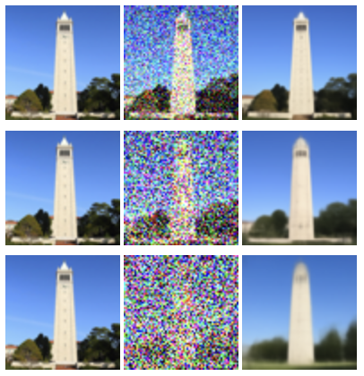Top: The original Campanile image; with noise (t=250); denoised via UNet.
Middle: Original; noisy (t=500); denoised.
Bottom: Original; noisy (t=750); denoised.
The UNet performs worse on highly noisy inputs, which makes sense. But a diffusion model can denoise an input with any amount of noise. In particular, DeepFloyd can denoise an image with any amount of noise from t=0 (no noise) to t=1000 (entirely noise).
For a noisy image x_t, DeepFloyd provides a noise estimate err and a scalar constant alpha_cumprod_t that can be used to obtain x_{t-1}. Over hundreds of iterations, we can transform x_t into a clean image x_0.
(To compute the estimated noise of x_t, DeepFloyd must receive an embedded text prompt that describes the desired x_0. By default, we supply the text prompt "a high quality photo".)
Iterating hundreds of times is costly. We define a sequence of "strided timesteps" in which each strided timestep corresponds to 30 canonical timesteps. In particular, we have st[0]=990, st[1]=960, ..., st[33]=0. We use a modified denoising formula to iterate over strided timesteps instead of canonical timesteps; in each iteration, we compute x_{t-30} instead of x_{t-1}.
We show the iterative denoising of a noisy image x_690.
Selected intermediate results of denoising x_690 with iterative denoising.
For comparison: The results of iterative denoising, UNet denoising, and blurring on x_690.
We sample an image from our denoising process by passing in a pure-noise image with timestep t=990. (We also pass in the default text prompt.)
Five samples of "a high quality photo".
We improve the quality of our sampled images with "Classifier-Free Guidance". In addition to the default text prompt ("a high quality photo"), we pass in the null prompt ("") to DeepFloyd. For a given x_t, each of our prompts provides a noise estimate. The former prompt is a "condition prompt" that provides our conditioned estimate err_c; the latter prompt is an "unconditioned prompt" that provides our unconditioned estimate err_u.
For some value gamma > 1, we compute err = err_u + gamma * (err_c - err_u). Note that err is essentially a weighted average in which err_c receives highly positive weight and err_u receives negative weight; informally, err is a more extreme version of err_c. We use err in our subsequent computation of x_{t-30}.
Now we sample images from our CFG-enhanced denoising process. We use the value gamma = 7.
Five CFG-enhanced samples of "a high quality photo".
By providing the noisy version of a clean image to our denoising process, we obtain an output image that resembles the clean input with some random changes. For large t (e.g. st[1]=960), the output will have very little connection to the input; for small t (e.g. st[20]=330), the output will closely resemble the input.
We use the Campanile image and two other real-life images as our clean inputs. For each image, we add noise to it according to a varying initial timestep and pass it into the denoising process.
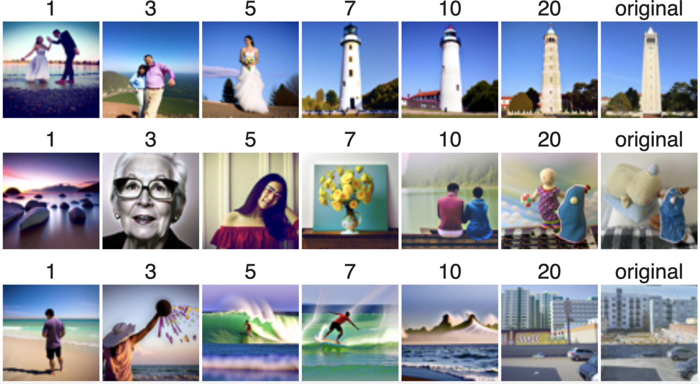Top: For i = [1, 3, 5, 7, 10, 20], the result of image-to-image translation with initial timestep st[i] and the Campanile image as input.
Middle: Image-to-image translations with plushies.jpg.
Bottom: Image-to-image translations with view.jpg.
We also perform image-to-image translations with web images and drawn images.
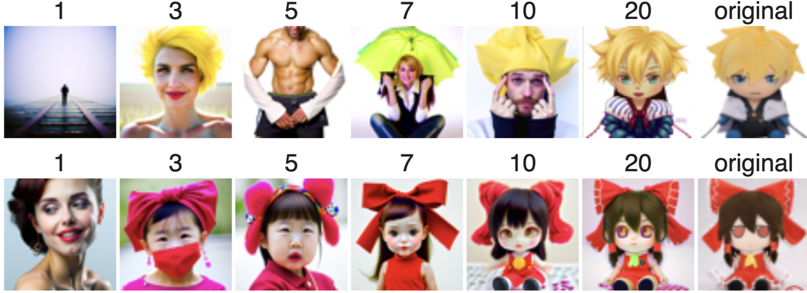Top: Image-to-image translations with Ky, a character from the Guilty Gear franchise.
Bottom: Image-to-image translations with Reimu, a character from the Touhou franchise.
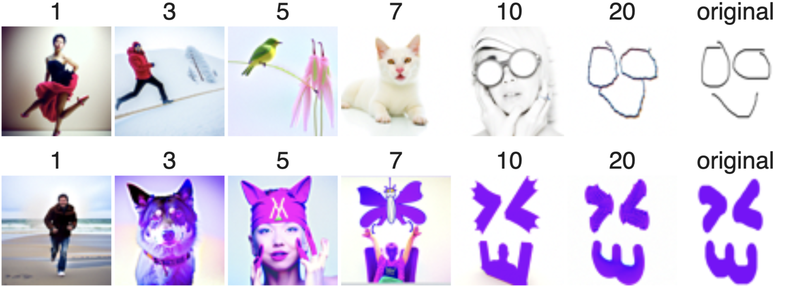Top: Image-to-image translations with a smiley face.
Bottom: Image-to-image translations with a purple smiley face.
For our image of the Campanile and our two web images, we define rectangular "masks". We can modify the denoising process so that it produces outputs with changes in the masked areas only. Then we execute the denoising process. We choose an initial timestep of st[0]=990 in order to maximize the changes in the masked areas.
Inpainting masks and results for the Campanile, Ky, and Reimu images.
Observe that performing image-to-image translation with a high initial timestep yields a highly random output. We can reduce this randomness by replacing our generic condition prompt with a more specific condition prompt. The unconditioned prompt stays the same.
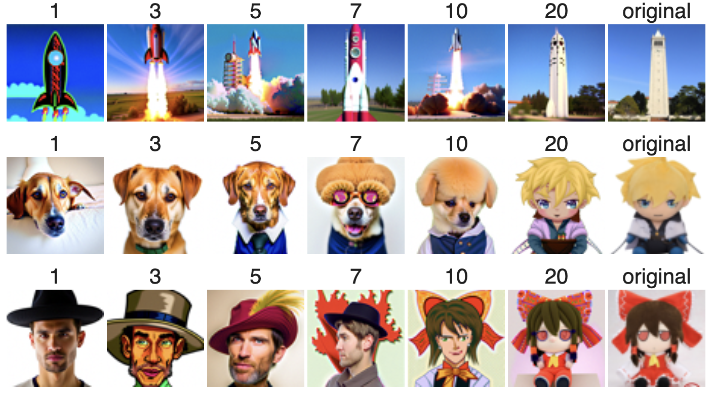Top: Image-to-image translations with the Campanile image. The condition prompt is "a rocket ship".
Middle: Image-to-image translations with Ky. Prompt: "a photo of a dog".
Bottom: Image-to-image translations with Reimu. Prompt: "a man with a hat".
In this section and section 1.9, we produce visually interesting results by providing our denoising process with multiple condition prompts.
A "visual anagram" depicts different things when viewed right-side-up and upside-down. To generate a visual anagram, we need a condition prompt for the right-side-up view and a condition prompt for the upside-down view.
We execute our denoising process with a high initial timestep and an input of pure noise. For each (strided) iteration of the denoising process, we get a noise estimate err_1 for the current x_t with our right-side-up prompt and a noise estimate err_2 with our upside-down prompt. The weighted average err = w * err_1 + (1 - w) * err_2 (for 0 < w < 1) is used to compute x_{t-30}. Note that computing err_2 requires us to flip x_t beforehand. The weight w is determined by trial and error.
A visual anagram with right-side-up prompt "an oil painting of people around a campfire", upside-down prompt "an oil painting of an old man", and weight w = 0.7.
Prompts: "an oil painting of chocolate pieces", "an oil painting of a brown dog". Weight: w = 0.7.
Prompts: "an oil painting of a snowy mountain village", "a photo of the amalfi cost" [sic]. Weight: w = 0.75.
A "hybrid image" depicts different things when viewed far-away and close-up. The far-away view relies on low-frequency features of the image, and the close-up view relies on high-frequency features. To generate a hybrid image, we need a condition prompt for its low-frequency features and a condition prompt for its high-frequency features.
As with visual anagrams, we generate hybrid images by combining our noise estimates err_1, err_2 for x_t in each (strided) iteration of the denoising process. For hybrid images, we have err = low_freq(err_1) + high_freq(err_2), where low_freq is a Gaussian blur filter (with kernel size of 33, sigma of 2) and high_freq is its complement.
A hybrid image with far-away prompt "a lithograph of a skull" and close-up prompt ""a lithograph of waterfalls".
Far-away: "a pencil". Close-up: "a rocket ship".
Far-away: "a lithograph of planet earth". Close-up: "a lithograph of blue and green fishes".
In the second part of this project, we create a diffusion model that generates images which resemble digits in the MNIST database.
Our overall goal is to generate MNIST-like images from images of pure noise. An intermediate step is to train a UNet that cleans up noisy versions of MNIST images.
We implement a UNet with the following architecture, as shown in the project spec. Unlike a diffusion model, which removes noise from an image over the course of many iterations, the UNet is designed to denoise an image in a single iteration.

To obtain training data for the UNet, we modify each datapoint in the training portion of the MNIST dataset. Each MNIST datapoint consists of a 28x28 image of a handwritten digit and a label indicating its value.
We add noise to a clean MNIST image according to the following formula: z = x + delta * epsilon, where x is the clean image, delta is a scalar constant, and epsilon is standard-normal noise. Each (z, x) pair serves as a training datapoint for the UNet: given z, the UNet should recover x. For now, we ignore the original labels of the MNIST dataset.
Our noising process produces the following results for various values of delta:
In practice, all of our training datapoints have delta=0.5 noise, under the assumption that a thoroughly-trained UNet will be able to denoise images with other amounts of noise.
Our modified training data contains 60,000 datapoints. We train the UNet over five epochs with a batch size of 256, a hidden dimension of D = 128, and an Adam optimizer with learning rate 1e-4. Our loss function computes the squared error between each outputted image and its corresponding true clean image.
We get the following training losses:
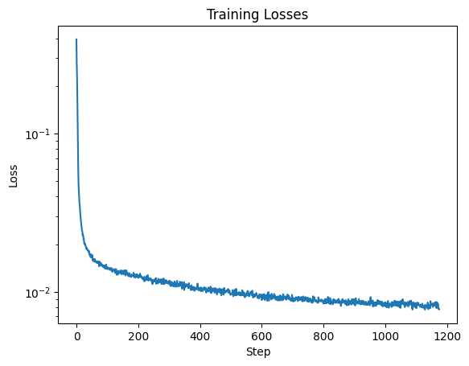We generate test datapoints in the same way we generated training datapoints, except we now derive our datapoints from the test portion of MNIST. We test the UNet after its first and fifth epochs.
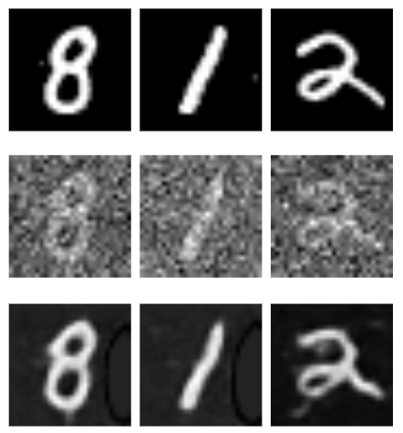Top: Original MNIST images. Middle: With delta=0.5 noise. Bottom: Denoised by first-epoch UNet.
Top: Original MNIST images. Middle: With delta=0.5 noise. Bottom: Denoised by fifth-epoch UNet.
We can see that the fifth-epoch UNet produces fewer visual artefacts than the first-epoch UNet.
Once the UNet has finished training, we perform "out-of-distribution" testing. We generate noisy images using various values of delta and inspect the results of denoising with the UNet. (It is important that we derive the noisy images from the test portion, not the training portion, of the MNIST dataset.)
Top: A MNIST test image noised with delta = [0.0, 0.2, 0.4, 0.5, 0.6, 0.8, 1.0].
Bottom: The results of denoising each noised image with the fully-trained UNet.
Unlike the UNet, our desired diffusion model must denoise iteratively and must be able to denoise an image according to some input timestep. We modify the original UNet architecture to support a scalar input t that accompanies each input image.

For training and testing our diffusion model, we employ the "forwarding" and "sampling" approach of DDPM models. Under this approach, our "time-conditional" UNet no longer tries to estimate the clean version of an input noisy image; instead, it tries to estimate the error of the noisy image. This is a minor change, but it is helpful during forwarding.
To train the time-conditional UNet, we first precompute the DDPM values (alpha_t, beta_t, alpha_cumprod_t) for each timestep 0 ≤ t ≤ 300. Then we repeatedly select random clean images x_0 from the training portion of MNIST, random standard-normal errors epsilon, and random timesteps 1 ≤ t ≤ 300. For each (x_0, epsilon, t) triplet, we compute a noisy image x_t. Passing (x_t, t) into the time-conditional UNet yields an estimate for epsilon, which is compared to the true value. (This repeated process is the "forwarding" of a DDPM model.)
We train over twenty epochs of the training portion of MNIST. We use a batch size of 128, a hidden dimension of D = 64, and an Adam optimizer with an initial learning rate of 1e-3 that decays exponentially to 1e-4.
We get the following training losses for the time-conditional UNet:
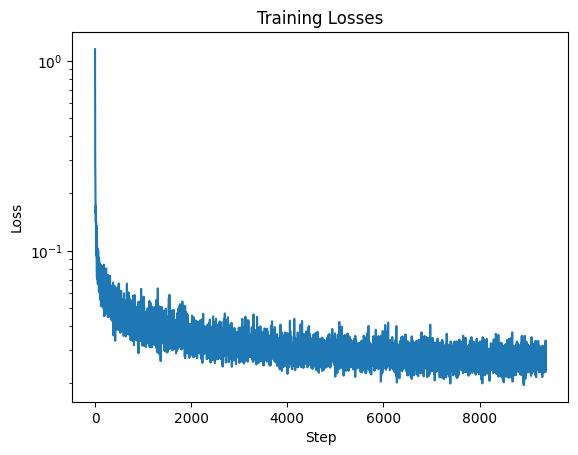During and after the training of the time-conditional UNet, we test it (in other words, we perform "sampling") by iteratively removing noise from a pure-noise image. Each call to the time-conditional UNet constitutes a single timestep, so we need 300 calls to arrive at a clean image. Remarkably, the test portion of MNIST is completely unnecessary.
We test the following epochs of the time-conditional UNet:
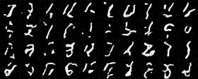Epoch 1
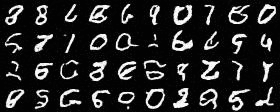Epoch 5
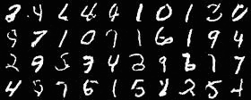Epoch 10
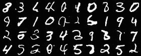Epoch 15
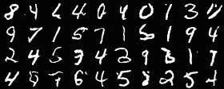Epoch 20
The test results of the time-conditional UNet have many artefacts and do not always resemble actual digits. We improve on our time-conditional UNet by modifying its architecture to support a third parameter c, a one-hot encoding that represents a particular digit from 0 to 9. The value for c enters the "class-conditional" UNet at the same modules as t.
x_0 as the value for c. (To ensure the class-conditional UNet supports arbitrary generation in addition to class-specific generation, we randomly "zero out" 10% of the encodings.) Otherwise, training the class-conditional UNet is identical to training the time-conditional UNet.
We get the following training losses for the class-conditional UNet:
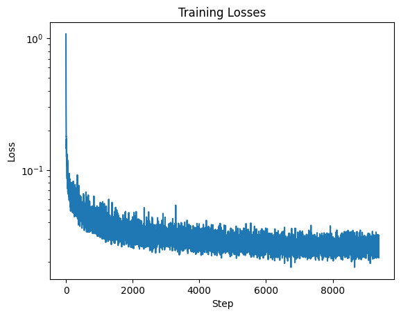Testing the class-conditional UNet is likewise similar to testing the time-conditional UNet. In our testing, we pass in specific values for c to verify that the class-conditional UNet supports class-specific generation.
We test the following epochs of the class-conditional UNet:
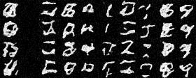Epoch 1
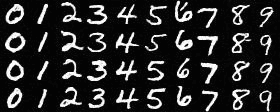Epoch 5
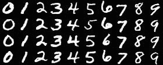Epoch 10
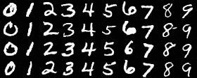Epoch 15
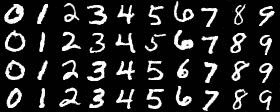Epoch 20
We can see that the class-conditional UNet generates images of far better quality than the time-conditional UNet.
{kind=link}
{kind=link}